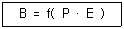
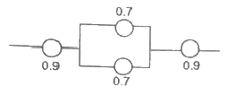
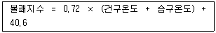
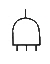
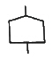
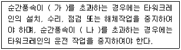
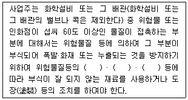
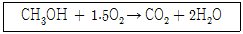

산업안전산업기사 (2019-04-27 기출문제)
1과목: 산업안전관리론
1. 다음 중 무재해운동의 기본이념 3원칙에 포함되지 않는 것은?
- 무의 원칙
- 선취의 원칙
- 참가의 원칙
- 라인화의 원칙
(정답률: 93%)

2. 산업안전보건법령상 상시 근로자수의 산출내역에 따라, 연간 국내공사 실적액이 50억원이고 건설업평균임금이 250만원이며, 노무비율은 0.06인 사업장의 상시 근로자수는?
- 10인
- 30인
- 33인
- 75인
(정답률: 52%)
3. 산업안전보건법령상 산업재해 조사표에 기록되어야 할 내용으로 옳지 않은 것은?
- 사업장 정보
- 재해정보
- 재해발생개요 및 원인
- 안전교육 계획
(정답률: 83%)
4. 하인리히의 재해발생 원인 도미노이론에서 사고의 직접원인으로 옳은 것은?
- 통제의 부족
- 관리 구조의 부적절
- 불안전한 행동과 상태
- 유전과 환경적 영향
(정답률: 84%)
5. 매슬로우(Maslow)의 욕구단계 이론 중 제2단계의 욕구에 해당하는 것은?
- 사회적 욕구
- 안전에 대한 욕구
- 자아실현의 욕구
- 존경과 긍지에 대한 욕구
(정답률: 89%)
6. 산업안전보건법령상 안전모의 종류(기호) 중 사용 구분에서 “물체의 낙하 또는 비래 및 추락에 의한 위험을 방지 또는 경감하고, 머리부위 감전에 의한 위험을 방지하기 위한 것”으로 옳은 것은?
- A
- AB
- AE
- ABE
(정답률: 79%)
7. 다음 중 산업심리의 5대 요소에 해당하지 않는 것은?
- 적성
- 감정
- 기질
- 동기
(정답률: 72%)
8. 주의의 수준에서 중간 수준에 포함되지 않는 것은?
- 다른 곳에 주의를 기울이고 있을 때
- 가시시야 내 부분
- 수면 중
- 일상과 같은 조건일 경우
(정답률: 88%)
9. 다음 중 안전 태도 교육의 원칙으로 적절하지 않은 것은?
- 청취위주의 대화를 한다.
- 이해하고 납득한다.
- 항상 모범을 보인다.
- 지적과 처벌 위주로 한다.
(정답률: 91%)
10. 레빈(Lewin)은 인간행동과 인간의 조건 및 환경조건의 관계를 다음과 같이 표시하였다. 이 때 'f'의 의미는?

- 행동
- 조명
- 지능
- 함수
(정답률: 88%)
11. 적응기제(Adjustment Mechanism)의 유형에서 “동일화(identification)”의 사례에 해당하는 것은?
- 운동시합에 진 선수가 컨디션이 좋지 않았다고 한다.
- 결혼에 실패한 사람이 고아들에게 정열을 쏟고 있다.
- 아버지의 성공을 자신의 성공인 것처럼 자랑하며 거만한 태도를 보인다.
- 동생이 태어난 후 초등학교에 입학한 큰 아이가 손가락을 빨기 시작했다.
(정답률: 87%)
12. 특성에 따른 안전교육의 3단계에 포함되지 않는 것은?
- 태도교육
- 지식교육
- 직무교육
- 기능교육
(정답률: 70%)
13. 산업안전보건법령상 다음 그림에 해당하는 안전·보건표지의 종류로 옳은 것은?
- 부식성물질경고
- 산화성물질경고
- 인화성물질경고
- 폭발성물질경고
(정답률: 88%)
14. 다음 중 작업표준의 구비조건으로 옳지 않은 것은?
- 작업의 실정에 적합할 것
- 생산성과 품질의 특성에 적합할 것
- 표현은 추상적으로 나타낼 것
- 다른 규정 등에 위배되지 않을 것
(정답률: 91%)
15. 다음 중 위험예지훈련 4라운드의 순서가 올바르게 나열된 것은?
- 현상파악 → 본질추구 → 대책수립 → 목표설정
- 현상파악 → 대책수립 → 본질추구 → 목표설정
- 현상파악 → 본질추구 → 목표설정 → 대책수립
- 현상파악 → 목표설정 → 본질추구 → 대책수립
(정답률: 79%)
16. 산업안전보건법령상 특별안전·보건교육 대상 작업별 교육내용 중 밀폐공간에서의 작업 시 교육내용에 포함되지 않는 것은? (단, 그 밖에 안전·보건관리에 필요한 사항은 제외한다.)
- 산소농도측정 및 작업환경에 관한 사항
- 유해물질이 인체에 미치는 영향
- 보호구 착용 및 사용방법에 관한 사항
- 사고 시의 응급 처치 및 비상시 구출에 관한 사항
(정답률: 79%)
17. 안전지식교육 실시 4단계에서 지식을 실제의 상황에 맞추어 문제를 해결해 보고 그 수법을 이해시키는 단계로 옳은 것은?
- 도입
- 제시
- 적용
- 확인
(정답률: 80%)
18. 다음 중 산업재해 통계에 관한 설명으로 적절하지 않은 것은?
- 산업재해 통계는 구체적으로 표시되어야 한다.
- 산업재해 통계는 안전 활동을 추진하기 위한 기초자료이다.
- 산업재해 통계만을 기반으로 해당 사업장의 안전수준을 추측한다.
- 산업재해 통계의 목적은 기업에서 발생한 산업재해에 대하여 효과적인 대책을 강구하기 위함이다.
(정답률: 87%)
19. French와 Raven이 제시한, 리더가 가지고 있는 세력의 유형이 아닌 것은?
- 전문세력(expert power)
- 보상세력(reward power)
- 위임세력(entrust power)
- 합법세력(legitimate power)
(정답률: 69%)
20. 산업안전보건법령상 안전검사 대상 유해·위험기계의 종류에 포함되지 않는 것은?
- 전단기
- 리프트
- 곤돌라
- 교류아크용접기
(정답률: 75%)
2과목: 인간공학 및 시스템안전공학
21. 체계 설계 과정의 주요 단계 중 가장 먼저 실시되어야 하는 것은?
- 기본설계
- 계면설계
- 체계의 정의
- 목표 및 성능 명세 결정
(정답률: 59%)
22. 고장형태 및 영향분석(FMEA : Failure Mode and Effect Analyis)에서 치명도 해석을 포함시킨 분석 방법으로 옳은 것은?
- CA
- ETA
- FMETA
- FMECA
(정답률: 74%)
23. 그림과 같은 시스템의 신뢰도로 옳은 것은? (단, 그림의 숫자는 각 부품의 신뢰도이다.)

- 0.6261
- 0.7371
- 0.8481
- 0.9591
(정답률: 69%)
24. 인간의 시각특성을 설명한 것으로 옳은 것은?
- 적응은 수정체의 두께가 얇아져 근거리의 물체를 볼 수 있게 되는 것이다.
- 시야는 수정체의 두께 조저로 이루어진다.
- 망막은 카메라의 렌즈에 해당된다.
- 암조응에 걸리는 시간은 명조응보다 길다.
(정답률: 70%)
25. 다음 중 생리적 스트레스를 전기적으로 측정하는 방법으로 옳지 않은 것은?
- 뇌전도(EEG)
- 근전도(EMG)
- 전기 피부 반응(GSR)
- 안구 반응(EOG)
(정답률: 62%)
26. 레버를 10° 움직이면 표시장치는 1cm 이동하는 조종 장치가 있다. 레버의 길이가 20cm 라고 하면 이 조종 장치의 통제표시비(C/D 비)는 약 얼마인가?
- 1.27
- 2.38
- 3.49
- 4.51
(정답률: 42%)
27. 서서 하는 작업의 작업대 높이에 대한 설명으로 옳지 않은 것은?
- 정밀작업의 경우 팔꿈치 높이보다 약간 높게 한다.
- 경작업의 경우 팔꿈치 높이보다 약간 낮게 한다.
- 중작업의 경우 경작업의 작업대 높이보다 약간 낮게 한다.
- 작업대의 높이는 기준을 지켜야 하므로 높낮이가 조절되어서는 안 된다.
(정답률: 82%)
28. 작업장 내부의 추천반사율이 가장 낮아야 하는 곳은?
- 벽
- 천장
- 바닥
- 가구
(정답률: 81%)
29. 인간의 정보처리 기능 중 그 용량이 7개 내외로 작아, 순간적 망각 등 인적 오류의 원인이 되는 것은?
- 지각
- 작업기억
- 주의력
- 감각보관
(정답률: 72%)
30. 인간오류의 분류 중 원인에 의한 분류의 하나로, 작업자 자신으로부터 발생하는 에러로 옳은 것은?
- Command error
- Secondary error
- Primary error
- Third error
(정답률: 66%)
31. 일반적으로 인체에 가해지는 온·습도 및 기류 등의 외적변수를 종합적으로 평가하는 데에는 “불쾌지수”라는 지표가 이용된다. 불쾌지수의 계산식이 다음과 같은 경우, 건구온도와 습구온도의 단위로 옳은 것은?

- 실효온도
- 화씨온도
- 절대온도
- 섭씨온도
(정답률: 73%)
32. FT도에 사용되는 논리기호 중 AND 게이트에 해당하는 것은?




(정답률: 80%)
33. 위팔은 자연스럽게 수직으로 늘어뜨린 채, 아래팔만을 편하게 뻗어 작업할 수 있는 범위는?
- 정상작업역
- 최대작업역
- 최소작업역
- 작업포락면
(정답률: 68%)
34. 음의 강약을 나타내는 기본 단위는?
- dB
- pont
- hertz
- diopter
(정답률: 84%)
35. 신뢰성과 보전성 개선을 목적으로 하는 효과적인 보전기록 자료에 해당하지 않는 것은?
- 설비이력카드
- 자재관리표
- MTBF 분석표
- 고장원인대책표
(정답률: 71%)
36. 예비위험분석(PHA)에 대한 설명으로 옳은 것은?
- 관련된 과거 안전점검결과의 조사에 적절하다.
- 안전관련 법규 조항의 준수를 위한 조사방법이다.
- 시스템 고유의 위험성을 파악하고 예상되는 재해의 위험 수준을 결정한다.
- 초기 단계에서 시스템 내의 위험요소가 어떠한 위험상태에 있는가를 정성적으로 평가하는 것이다.
(정답률: 73%)
37. 다음의 FT도에서 몇 개의 미니멀패스셋(minimal path sets)이 존재하는가?
- 1개
- 2개
- 3개
- 4개
(정답률: 53%)
38. 정보를 전송하기 위해 청각적 표시장치를 이용하는 것이 바람직한 경우로 적합한 것은?
- 전언이 복잡한 경우
- 전언이 이후에 재참조되는 경우
- 전언이 공간적인 사건을 다루는 경우
- 전언이 즉각적인 행동을 요구하는 경우
(정답률: 78%)
39. FTA에서 모든 기본사상이 일어났을 때 톱(top)사상을 일으키는 기본사상의 집합을 무엇이라 하는가?
- 컷셋(Cut set)
- 최소 컷셋(Minimal Cut set)
- 패스셋(Path set)
- 최소 패스셋(Minamal Path set)
(정답률: 68%)
40. 조종장치를 통한 인간의 통제 아래 기계가 동력원을 제공하는 시스템의 형태로 옳은 것은?
- 기계화 시스템
- 수동 시스템
- 자동화 시스템
- 컴퓨터 시스템
(정답률: 65%)
3과목: 기계위험방지기술
41. 선반에서 냉각재 등에 의한 생물학적 위험을 방지하기 위한 방법으로 틀린 것은?
- 냉각재가 기계에 잔류되지 않고 중력에 의해 수집탱크로 배유되도록 해야 한다.
- 냉각재 저장탱크에는 외부 이물질의 유입을 방지하기 위해 덮개를 설치해야 한다.
- 특별한 경우를 제외하고는 정상 운전 시 전체 냉각재가 계통 내에서 순환되고 냉각재 탱크에 체류하지 않아야 한다.
- 배출용 배관의 지름은 대형 이물질이 들어가지 않도록 작아야 하고, 지면과 수평이 되도록 제작해야 한다.
(정답률: 73%)
42. 산업용 로봇의 작동범위에서 그 로봇에 관하여 교시 등의 작업을 하는 경우 작업시간 전 점검사항에 해당하지 않는 것은? (단, 로봇의 동력원을 차단하고 행하는 것을 제외한다.)
- 회전부의 덮개 또는 울 부착여부
- 제동장치 및 비상정지장치의 기능
- 외부전선의 피복 또는 외장의 손상유무
- 매니퓰레이터(manipulator) 작동의 이상유무
(정답률: 53%)
43. 기계장치의 안전설계를 위해 적용하는 안전율 계산식은?
- 안전하중 ÷ 설계하중
- 최대사용하중 ÷ 극한강도
- 극한강도 ÷ 최대설계응력
- 극한강도 ÷ 파단하중
(정답률: 55%)
44. 양수 조작식 방호장치에서 양쪽 누름버튼 간의 내측 거리는 몇 mm 이상이어야 하는가?
- 100
- 200
- 300
- 400
(정답률: 80%)
45. “가”와 “나”에 들어갈 내용으로 옳은 것은?

- 가 : 10m/s, 나 : 15m/s
- 가 : 10m/s, 나 : 25m/s
- 가 : 20m/s, 나 : 35m/s
- 가 : 20m/s, 나 : 45m/s
(정답률: 74%)
46. 드릴 작업 시 올바른 작업안전수칙이 아닌 것은?
- 구멍을 뚫을 때 관통된 것을 확인하기 위해 손으로 만져서는 안 된다.
- 드릴을 끼운 후에 척 렌지(chuck wrench)를 부착한 상태에서 드릴 작업을 한다.
- 작업모를 착용하고 옷소매가 긴 작업복은 입지 않는다.
- 보호 안경을 쓰거나 안전덮개를 설치한다.
(정답률: 82%)
47. 지게차 헤드가드의 안전기준에 관한 설명으로 틀린 것은?(문제 오류로 가답안 발표시 1번으로 발표되었지만 확정답안 발표시 1, 3, 4번이 정답처리 되었습니다. 여기서는 1번을 누르면 정답 처리 됩니다.)
- 상부틀의 각 개구의 폭 또는 길이가 20cm 이상일 것
- 강도는 지게차의 최대하중의 2배 값(4톤을 넘는 값에 대해서는 4톤으로 한다.)의 등분포정하중에 견딜 수 있을 것
- 운전자가 서서 조작하는 방식의 지게차의 경우에는 운전석의 바닥며에서 헤드가드의 상부틀 하면까지의 높이가 2m 이상일 것
- 운전자가 앉아서 조작하는 방식의 지게차의 경우에는 운전자의 좌석 윗면에서 헤드가드의 상부틀 아랫면까지의 높이가 1m 이상일 것
(정답률: 79%)
48. 프레스 가공품의 이송방법으로 2차 가공용 송급배출장치가 아닌 것은?
- 다이얼 피더(dial feeder)
- 롤 피더(roll feeder)
- 푸셔 피더(pusher feeder)
- 트랜스퍼 피더(transfer feeder)
(정답률: 60%)
49. 다음 중 연삭기를 이용한 작업의 안전대책으로 가장 옳은 것은?
- 연삭숫돌의 최고 원주 속도 이상으로 사용하여여 한다.
- 운전 중 연삭숫돌의 균열 확인을 위해 수시로 충격을 가해 본다.
- 정밀한 작업을 위해서는 연삭기의 덮개를 벗기고 숫돌의 정면에 서서 작업한다.
- 작업시작 전에는 1분 이상 시운전을 하고 숫돌의 교체 시에는 3분 이상 시운전을 한다.
(정답률: 83%)
50. 압력용기에서 안전밸브를 2개 설치한 경우 그 설치방법으로 옳은 것은? (단, 해당하는 압력용기가 외부화재에 대한 대비가 필요한 경우로 한정한다.)
- 1개는 최고사용압력 이하에서 작동하고 다른 1개는 최고사용압력의 1.1배 이하에서 작동하도록 한다.
- 1개는 최고사용압력 이하에서 작동하고 다른 1개는 최고사용압력의 1.2배 이하에서 작동하도록 한다.
- 1개는 최고사용압력의 1.⑤배 이하에서 작동하고 다른 1개는 최고사용압력의 1.1배 이하에서 작동하도록 한다.
- 1개는 최고사용압력의 1.⑤배 이하에서 작동하고 다른 1개는 최고사용압력의 1.2배 이하에서 작동하도록 한다.
(정답률: 59%)
51. 범용 수동 선반의 방호조치에 대한 설명으로 틀린 것은?
- 대형 선반의 후면 칩 가드는 새들의 전체 길이를 방호할 수 있어야 한다.
- 척 가드의 폭은 공작물의 가공작업에 방해되지 않는 범위에서 척 전체 길이를 방호해야 한다.
- 수동 조작을 위한 제어장치는 정확한 제어를 위해 조작 스위치를 돌출형으로 제작해야 한다.
- 스핀들 부위를 통한 기어박스에 접촉될 위험이 있는 경우에는 해당부위에 잠금장치가 구비된 가드를 설치하고 스핀들 회전과 연동회로를 구성해야 한다.
(정답률: 75%)
52. 프레스에 금형 조정 작업 시 슬라이드가 갑자기 작동함으로써 근로자에게 발생할 우려가 있는 위험을 방지하기 위하여 사용하는 것은?
- 안전 블록
- 비상정지장치
- 감응식 안전장치
- 양수조작식 안전장치
(정답률: 76%)
53. 크레인 작업 시 300kg 의 질량을 10m/s2의 가속도로 감아올릴 때 로프에 걸리는 총 하중은 약 몇 N인가? (단, 중력가속도는 9.81m/s2로 한다.)
- 2943
- 3000
- 5943
- 8886
(정답률: 48%)
54. 사고 체인의 5요소에 해당하지 않는 것은?
- 함정(trap)
- 충격(impact)
- 접촉(contact)
- 결함(flaw)
(정답률: 40%)
55. 프레스 작업 시 왕복 운동하는 부분과 고정 부분 사이에서 형성되는 위험점은?
- 물림점
- 협착점
- 절단점
- 회전말림점
(정답률: 75%)
56. 기계설비의 안전화를 크게 외관의 안전화, 기능의 안전화, 구조적 안전화로 구분할 때, 기능의 안전화에 해당하는 것은?
- 안전율의 확보
- 위험부위 덮개 설치
- 기계 외관에 안전 색채 사용
- 전압 강하 시 기계의 자동정지
(정답률: 70%)
57. 근로자에게 위험을 미칠 우려가 있는 원동기, 축이음, 풀리 등에 설치하여야 하는 것은?
- 덮개
- 압력계
- 통풍장치
- 과압방지기
(정답률: 78%)
58. 컨베이어(conveyer)의 역전방지장치 형식이 아닌 것은?
- 램식
- 라쳇식
- 롤러식
- 전기브레이크식
(정답률: 51%)
59. 롤러기의 급정지를 위한 방호장치를 설치하고자 한다. 앞면 롤러의 지름이 30cm 이고, 회전수가 30rpm 일 때 요구되는 급정지 거리의 기준은?
- 급정지 거리가 앞면 롤러의 원주의 1/3 이상일 것
- 급정지 거리가 앞면 롤러의 원주의 1/3 이내일 것
- 급정지 거리가 앞면 롤러의 원주의 1/2.5 이상일 것
- 급정지 거리가 앞면 롤러의 원주의 1/2.5 이내일 것
(정답률: 59%)
60. 프레스의 작업 시작 전 점검사항으로 거리가 먼 것은?
- 클러치 및 브레이크의 기능
- 금형 및 고정볼트 상태
- 전단기(剪斷機)의 칼날 및 테이블의 상태
- 언로드 밸브의 기능
(정답률: 63%)
4과목: 전기 및 화학설비위험방지기술
61. 혼촉방지판이 부착된 변압기를 설치하고 혼촉방지판을 접지시켰다. 이러한 변압기를 사용하는 주요 이유는?
- 2차측의 전류를 감소시킬 수 있기 때문에
- 누전전류를 감소시킬 수 있기 때문에
- 2차측에 비접지 방식을 채택하면 감전 시 위험을 감소시킬 수 있기 때문에
- 전력의 손실을 감소시킬 수 있기 때문에
(정답률: 60%)
62. 인체가 현저히 젖어 있는 상태 또는 금속성의 전기·기계 장치나 구조물의 인체의 일부가 상시 접촉되어 있는 상태에서의 허용접촉전압으로 옳은 것은?
- 2.4 V 이하
- 25 V 이하
- 50 V 이하
- 75 V 이하
(정답률: 76%)
63. 아크 용접 작업 시 감전재해 방지에 쓰이지 않는 것은?
- 보호면
- 절연장갑
- 절연용접봉 홀더
- 자동전격방지장치
(정답률: 65%)
64. 산업안전보건법상 전기기계·기구의 누전에 의한 감전 위험을 방지하기 위하여 접지를 하여야 하는 사항으로 틀린 것은?
- 전기기계·기구의 금속제 내부 충전부
- 전기기계·기구의 금속제 외함
- 전기기계·기구의 금속제 외피
- 전기기계·기구의 금속제 철대
(정답률: 65%)
65. 변압기 전로의 1선 지락 전류가 6A 일 때 제2종 접지공사의 접지저항 값은? (단, 자동전로차단장치는 설치되지 않았다.)(관련 규정 개정전 문제로 여기서는 기존 정답인 4번을 누르면 정답 처리됩니다. 자세한 내용은 해설을 참고하세요.)
- 10 Ω
- 15 Ω
- 20 Ω
- 25 Ω
(정답률: 71%)
66. 전폐형 방폭구조가 아닌 것은?
- 압력방폭구조
- 내압방폭구조
- 유입방폭구조
- 안전증방폭구조
(정답률: 56%)
67. 방폭구조의 명칭과 표기기호가 잘못 연결된 것은?
- 안전증방폭구조 : e
- 유입(油入)방폭구조 : o
- 내압(耐壓)방폭구조 : p
- 본질안전방폭구조 : ia 또는 ib
(정답률: 68%)
68. 파이프 등에 유체가 흐를 때 발생하는 유동대전에 가장 큰 영향을 미치는 요인은?
- 유체의 이동거리
- 유체의 점도
- 유체의 속도
- 유체의 양
(정답률: 73%)
69. 충전전로의 선간전압이 121 kV 초과 145 kV 이하의 활선 작업시 충전전로에 대한 접근한계거리(cm)는?
- 130
- 150
- 170
- 230
(정답률: 60%)
70. 정전기 발생의 원인에 해당되지 않는 것은?
- 마찰
- 냉장
- 박리
- 충돌
(정답률: 78%)
71. 다음 중 분진폭발에 대한 설명으로 틀린 것은?
- 일반적으로 입자의 크기가 클수록 위험이 더 크다.
- 산소의 농도는 분진폭발 위험에 영향을 주는 요인이다.
- 주위 공기의 난류확산은 위험을 증가시킨다.
- 가스폭발에 비하여 불완전 연소를 일으키기 쉽다.
(정답률: 67%)
72. 다음 중 폭굉(detonation) 현상에 있어서 폭굉파의 진행 전면에 형성되는 것은?
- 증발열
- 충격파
- 역화
- 화염의 대류
(정답률: 79%)
73. 위험물안전관리법령상 제4류 위험물(인화성 액체)이 갖는 일반성질로 가장 거리가 먼 것은?
- 증기는 대부분 공기보다 무겁다.
- 대부분 물보다 가볍고 물에 잘 녹는다.
- 대부분 유기화합물이다.
- 발생증기는 연소하기 쉽다.
(정답률: 63%)
74. 아세틸렌(C2H2)의 공기 중 완전연소 조성농도(Cst)는 약 얼마인가?
- 6.7 vol%
- 7.0 vol%
- 7.4 vol%
- 7.7 vol%
(정답률: 44%)
75. 산업안전보건기준에 관한 규칙에 따라 폭발성 물질을 저장·취급하는 화학설비 및 그 부속설비를 설치할 때, 단위공정시설 및 설비로부터 다른 단위공정시설 및 설비 사이의 안전거리는 설비 바깥 면으로부터 몇 m 이상 두어야 하는가? (단, 원칙적인 경우에 한한다.)
- 3
- 5
- 10
- 20
(정답률: 54%)
76. 다음 중 가연성 가스가 아닌 것으로만 나열된 것은?
- 일산화탄소, 프로판
- 이산화탄소, 프로판
- 일산화탄소, 산소
- 산소, 이산화탄소
(정답률: 64%)
77. 나트륨은 물과 반응할 때 위험성이 매우 크다. 그 이유로 적합한 것은?
- 물과 반응하여 지연성 가스 및 산소를 발생시키기 때문이다.
- 물과 반응하여 맹독성 가스를 발생시키기 때문이다.
- 물과 발열반응을 일으키면서 가연성 가스를 발생시키기 때문이다.
- 물과 반응하여 격렬한 흡열반응을 일으키기 때문이다.
(정답률: 67%)
78. 다음은 산업안전보건기준에 관한 규칙에서 정한 부식방지와 관련한 내용이다. ( )에 해당하지 않는 것은?

- 종류
- 온도
- 농도
- 색상
(정답률: 77%)
79. 메탄올의 연소반응이 다음과 같을 때 최소산소농도(MOC)는 약 얼마인가? (단, 메탄올의 연소하한값(L)은 6.7 vol% 이다.)

- 1.5 vol%
- 6.7 vol%
- 10 vol%
- 15 vol%
(정답률: 36%)
80. 산업안전보건기준에 관한 규칙에서 부식성 염기류에 해당하는 것은?
- 농도 30퍼센트인 과염소산
- 농도 30퍼센트인 아세틸렌
- 농도 40퍼센트인 디아조화홥물
- 농도 40퍼센트인 수산화나트륨
(정답률: 61%)
5과목: 건설안전기술
81. 근로자가 추락하거나 넘어질 위험이 있는 장소에서 추락방호망의 설치 기준으로 옳지 않은 것은?
- 망의 처짐은 짧은 변 길이의 10% 이상이 되도록 할 것
- 추락방호망은 수평으로 설치할 것
- 건축물 등의 바깥쪽으로 설치하는 경우 추락방호망의 내민 길이는 벽면으로부터 3m 이상 되도록 할 것
- 추락방호망의 설치위치는 가능하면 작업면으로부터 가까운 지점에 설치하여야 하며, 작업면으로부터 망의 설치지점까지의 수직거리는 10m를 초과하지 아니할 것
(정답률: 52%)
82. 산업안전보건관리비에 관한 설명으로 옳지 않은 것은?
- 발주자는 수급인이 안전관리비를 다른 목적으로 사용한 금액에 대해서는 계약금액에서 감액 조정할 수 있다.
- 발주자는 수급인이 안전관리비를 사용하지 아니한 금액에 대하여는 반환을 요구할 수 있다.
- 자기공사자는 원가계산에 의한 예정가격 작성 시 안전관리비를 계상한다.
- 발주자는 설계변경 등으로 대상액의 변동이 있는 경우 공사 완료 후 정산하여야 한다.
(정답률: 67%)
83. 굴착면 붕괴의 원인과 가장 거리가 먼 것은?
- 사면경사의 증가
- 성토 높이의 감소
- 공사에 의한 진동하중의 증가
- 굴착높이의 증가
(정답률: 67%)
84. 다음 중 유해·위험방지계획서 작성 및 제출대상에 해당되는 공사는?
- 지상높이가 20m 인 건축물의 해체공사
- 깊이 9.5m인 굴착공사
- 최대 지간거리가 50m인 교량건설공사
- 저수용량 1천만톤인 용수전용 댐
(정답률: 68%)
85. 철근콘크리트 슬래브에 발생하는 응력에 대한 설명으로 옳지 않은 것은?
- 전단력은 일반적으로 단부보다 중앙부에서 크게 작용한다.
- 중앙부 하부에는 인장응력이 발생한다.
- 단부 하부에는 압축응력이 발생한다.
- 휨응력은 일반적으로 슬래브의 중앙부에서 크게 작용한다.
(정답률: 52%)
86. 연약지반을 굴착할 때, 흙막이벽 뒷쪽 흙의 중량이 바닥의 지지력보다 커지면, 굴착저면에서 흙이 부풀어 오르는 현상은?
- 슬라이딩(Sliding)
- 보일링(Boiling)
- 파이핑(Piping)
- 히빙(Heaving)
(정답률: 63%)
87. 철근콘크리트 공사 시 활용되는 거푸집의 필요조건이 아닌 것은?
- 콘크리트의 하중에 대해 뒤틀림이 없는 강도를 갖출 것
- 콘크리트 내 수분 등에 대한 물빠짐이 원활한 구조를 갖출 것
- 최소한의 재료로 여러 번 사용할 수 있는 전용성을 가질 것
- 거푸집은 조립·해체·운반이 용이하도록 할 것
(정답률: 60%)
88. 말비계를 조립하여 사용하는 경우에 준수해야 하는 사항으로 옳지 않은 것은?
- 지주부재의 하단에는 미끄럼 방지장치를 한다.
- 근로자는 양측 끝부분에 올라서서 작업하도록 한다.
- 지주부재와 수평면의 기울기를 75° 이하로 한다.
- 말비계의 높이가 2m를 초과하는 경우에는 작업발판의 폭을 40cm 이상으로 한다.
(정답률: 67%)
89. 슬레이트, 선라이트 등 강도가 약한 재료로 덮은 지붕 위에서 작업을 할 때 발이 빠지는 등 근로자의 위험을 방지하기 위하여 필요한 발판의 폭 기준은?
- 10cm 이상
- 20cm 이상
- 25cm 이상
- 30cm 이상
(정답률: 69%)
90. 추락방지용 방망 그물코의 모양 및 크기의 기준으로 옳은 것은?
- 원형 또는 사각으로서 그 크기는 5cm 이하이어야 한다.
- 원형 또는 사각으로서 그 크기는 10cm 이하이어야 한다.
- 사각 또는 마름모로서 그 크기는 5cm 이하이어야 한다.
- 사각 또는 마름모로서 그 크기는 10cm 이하이어야 한다.
(정답률: 68%)
91. 콘크리트를 타설할 때 안전상 유의하여야 할 사항으로 옳지 않은 것은?
- 콘크리트를 치는 도중에는 거푸집, 지보공 등의 이상유무를 확인한다.
- 진동기 사용 시 지나친 진동은 거푸집 도괴의 원인이 될 수 있으므로 적절히 사용해야 한다.
- 최상부의 슬래브는 되도록 이어붓기를 하고 여러 번에 나누어 콘크리트를 타설한다.
- 타워에 연결되어 있는 슈트의 접속이 확실한지 확인한다.
(정답률: 71%)
92. 무한궤도식 장비와 타이어식(차륜식) 장비의 차이점에 관한 설명으로 옳은 것은?
- 무한궤도식은 기동성이 좋다.
- 타이어식은 승차감과 주행성이 좋다.
- 무한궤도식은 경사지반에서의 작업에 부적당하다.
- 타이어식은 땅을 다지는 데 효과적이다.
(정답률: 68%)
93. 사다리식 통로 등을 설치하는 경우 발판과 벽과의 사이는 최소 얼마 이상의 간격을 유지하여야 하는가?
- 10 cm 이상
- 15 cm 이상
- 20 cm 이상
- 25 cm 이상
(정답률: 61%)
94. 정기안전점검 결과 건설공사의 물리적·기능적 결함 등이 발견되어 보수·보강 등의 조치를 하기 위하여 필요한 경우에 실시하는 것은?
- 자체안전점검
- 정밀안전점검
- 상시안전점검
- 품질관리점검
(정답률: 68%)
95. 차랑계 하역운반기계에 화물을 적재할 때의 준수사항과 거리가 먼 것은?
- 하중이 한쪽으로 치우지지 않도록 적재할 것
- 구내운반차 또는 화물자동차의 경우 화물의 붕괴 또는 낙하에 의한 위험을 방지하기 위하여 화물에 로프를 거는 등 필요한 조치를 할 것
- 운전자의 시야를 가리지 않도록 화물을 적재할 것
- 제동장치 및 조정장치 기능의 이상 유무를 점검할 것
(정답률: 67%)
96. 시스템 비계를 사용하여 비계를 구성하는 경우에 준수하여야 할 사항으로 옳지 않은 것은?
- 수직재와 수직재의 연결철물은 이탈되지 않도록 견고한 구조로 할 것
- 수직재·수평재·가새재를 견고하게 연결하는 구조가 되도록 할 것
- 수직재와 받침철물의 연결부 겹침길이는 받침철물 전체길이의 4분의 1 이상이 되도록 할 것
- 수평재는 수직재와 직각으로 설치하여야 하며, 체결 후 흔들림이 없도록 견고하게 설치할 것
(정답률: 72%)
97. 공사현장에서 낙하물방지망 또는 방호선반을 설치할 때 설치높이 및 벽면으로부터 내민길이 기준으로 옳은 것은?
- 설치높이 : 10m 이내마다, 내민길이 2m 이상
- 설치높이 : 15m 이내마다, 내민길이 2m 이상
- 설치높이 : 10m 이내마다, 내민길이 3m 이상
- 설치높이 : 15m 이내마다, 내민길이 3m 이상
(정답률: 59%)
98. 가설구조물이 갖추어야 할 구비요건과 가장 거리가 먼 것은?
- 영구성
- 경제성
- 작업성
- 안전성
(정답률: 73%)
99. 가설통로를 설치하는 경우 준수하여야 할 기준으로 옳지 않은 것은?
- 견고한 구조로 할 것
- 경사는 30° 이하로 할 것
- 경사가 30°를 초과하는 경우에는 미끄러지지 아니하는 구조로 할 것
- 수직갱에 가설된 통로의 길이가 15m 이상인 경우에는 10m 이내마다 계단참을 설치할 것
(정답률: 65%)
100. 산업안전보건기준에 관한 규칙에 따른 토사굴착 시 굴착면의 기울기기준으로 옳지 않은 것은?(2021년 11월 19일부터 개정된 규정 적용됨)
- 보통흙인 습지 – 1 : 1 ~ 1 : 1.5
- 풍화암 – 1 : 1.0
- 연암 – 1 : 1.0
- 보통흙인 건지 – 1 : 1.2 ~ 1 : 5
(정답률: 58%)
설명: 무재해운동의 기본이념 3원칙은 "무의 원칙", "선취의 원칙", "참가의 원칙"으로 구성됩니다. 이 세 가지 원칙은 각각 안전사고를 없애는 것, 안전사고를 예방하는 것, 모든 구성원이 참여하는 것을 강조합니다. "라인화의 원칙"은 무재해운동에서 사용되는 용어 중 하나이지만, 기본이념 3원칙에는 포함되어 있지 않습니다. "라인화"는 작업장에서 안전한 작업을 위해 작업장을 구역으로 나누어 각 구역마다 책임자를 두고 안전한 작업을 수행하는 것을 말합니다.